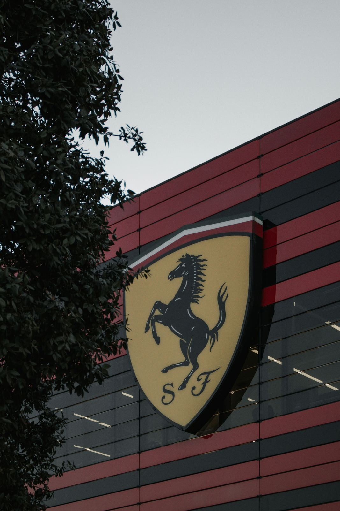
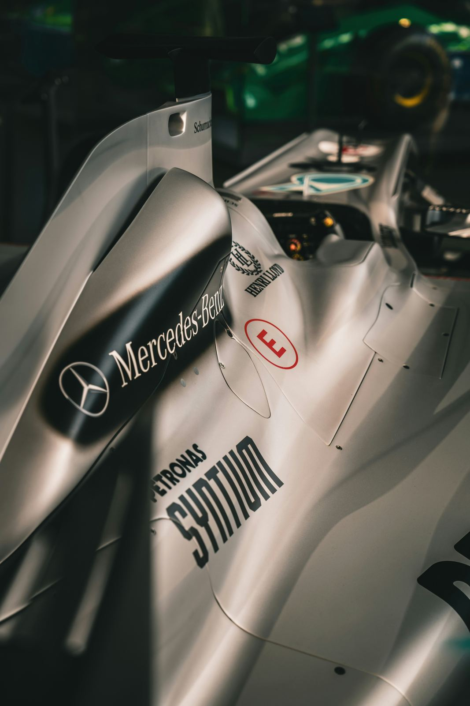
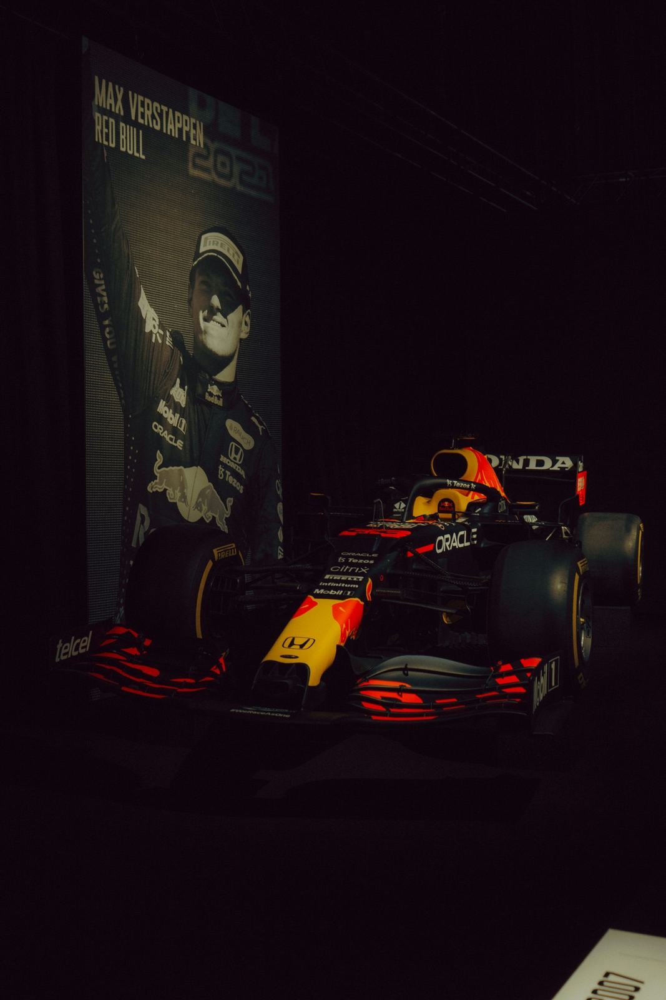

Scuderia Ferrari, presente en la F1 desde 1950
Fundada en 1929, Ferrari compite en la Fórmula 1 desde la primera temporada del campeonato y es la escudería con más títulos de constructores de la historia.

Once escuderías compiten en la temporada 2026 de la Fórmula 1. Aquí repasamos la historia de los equipos de F1 que dominaron distintas épocas y presentamos a otros protagonistas de la parrilla actual.
Fundada en 1929, Ferrari compite en la Fórmula 1 desde la primera temporada del campeonato y es la escudería con más títulos de constructores de la historia.

La escudería alemana ganó ocho campeonatos de constructores consecutivos entre 2014 y 2021, con la llegada de los motores híbridos.

La escudería con licencia austriaca debutó en 2005 y apenas cinco años después inició una racha de cuatro títulos de constructores seguidos, entre 2010 y 2013.
